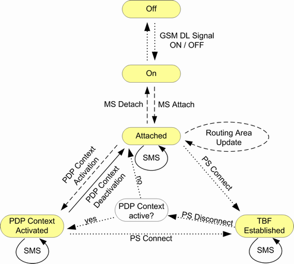

The main packet switched (PS) connection states are described in the following table.
PS state | Description |
|---|---|
Off | No signal transmission. |
"On (Idle)" | The R&S CMW emulates a GSM cell, transmitting a GSM control channel signal. A GPRS mobile station can detect this signal, synchronize to its timing and frequency and then read the system information. It learns that the instrument (representing the current cell in a real network) supports GPRS services and can initiate a GPRS attach. |
"Attached" | The mobile station is GPRS-attached. |
"PDP Context Activated" | A packet data protocol (PDP) context has been activated, triggered by a PDP context request from the MS. PDP is a network protocol used by an external packet data network interfacing to GPRS. This state is, for example, displayed when a packet data end-to-end connection has been successfully set up. |
"TBF Established" | A TBF connection has been established. This state is, for example, displayed when a test mode connection has been successfully set up. |
The "TBF Established" state was specified especially to facilitate production tests. The PS states "On", "Attached" and "TBF Established" must not be confused with the mobility management states "Idle", "Standby" and "Ready" defined in 3GPP TS 23.060. A temporary block flow (TBF) is established for signaling or data transmission in any state, not only in state "TBF Established". The main signaling view of the GSM signaling application indicates the main PS state and also, whether an UL and/or DL TBF is established. |
Control commands initiated by the R&S CMW or by the mobile switch between the PS main states. The following figure shows possible state transitions.

- Attaching:
A GPRS attach is always initiated by the mobile station. The MS identifies itself and indicates its presence to the instrument to use GPRS point-to-point (PTP) services. An attach can be executed any time in PS state "On".
If the MS performs a combined attach, the CS "Synchronized" state is reached together with the PS "Attached" state. - Detaching:
A GPRS detach is always initiated by the mobile station. - "Route Area Update":
The mobile performs a routing area update, either triggered by timer T3312 (periodic routing area update) or because the routing area code (RAC) has been changed. - "PDP Context Activation":
A PDP context activation is always triggered by a PDP context request sent by the MS. - "PDP Context Deactivation":
A PDP context deactivation is triggered by the MS or by the R&S CMW. - "Connecting":
The R&S CMW attempts to access the "TBF Established" state. The TBF connection must be initiated by the instrument. - "Releasing":
The TBF connection is being released (from "TBF Established" to "Attached"). - "Sending Message":
Displayed while an SMS message is sent to the MS. - "Receiving Message":
Displayed while an SMS message is received from the MS. To check the received message, see "Message Text / Message Length".
The transitions in the figure above are not complete. The "Off" state can be reached from any state by turning off the cell signal (ON | OFF). Moreover, incidents like a timeout or a loss of the radio link cause additional transitions. A GSM dual-band handover can be performed in the "TBF Established" PS state. The PS state does not change during the handover. See also "Mobility Management". |